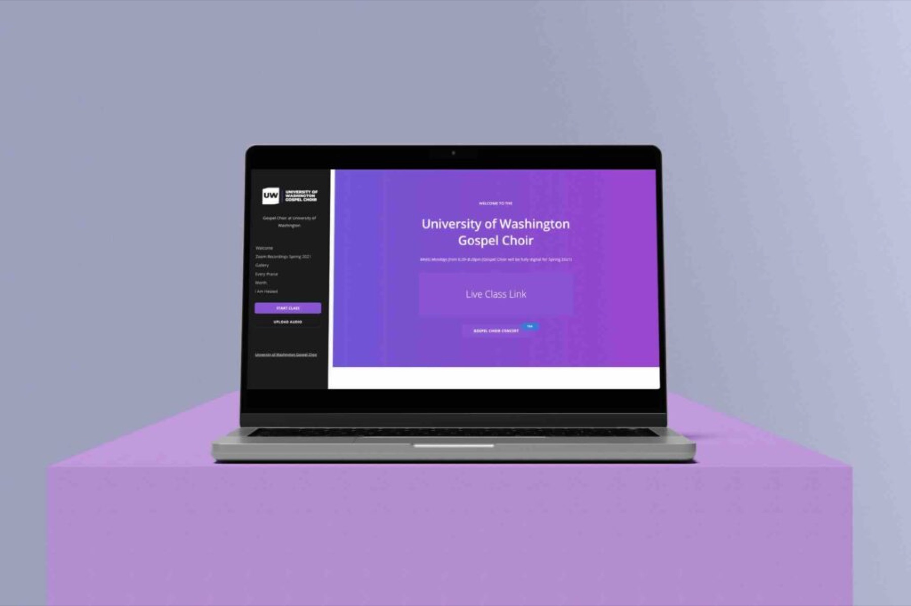
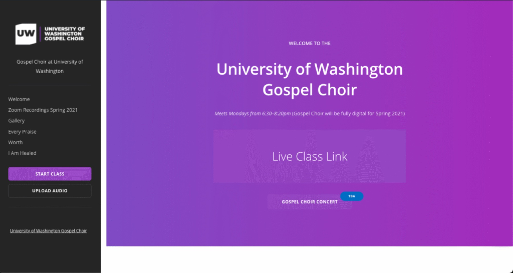
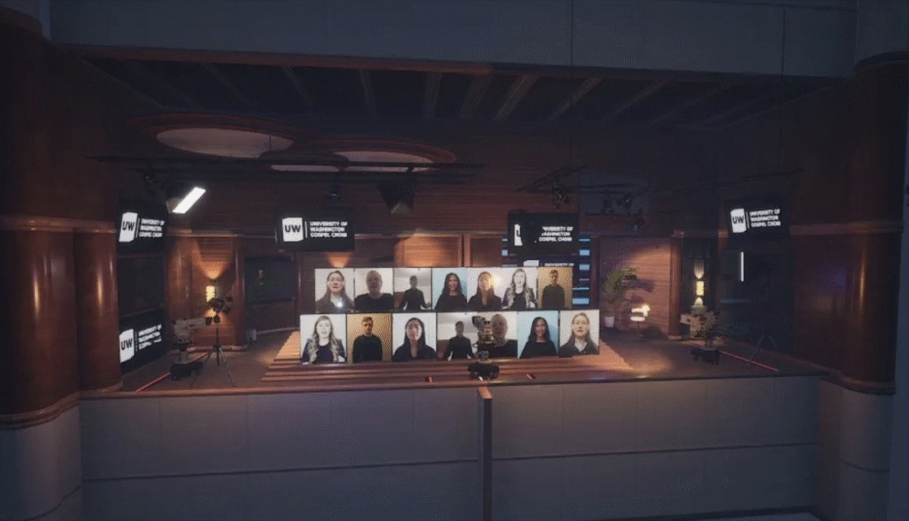
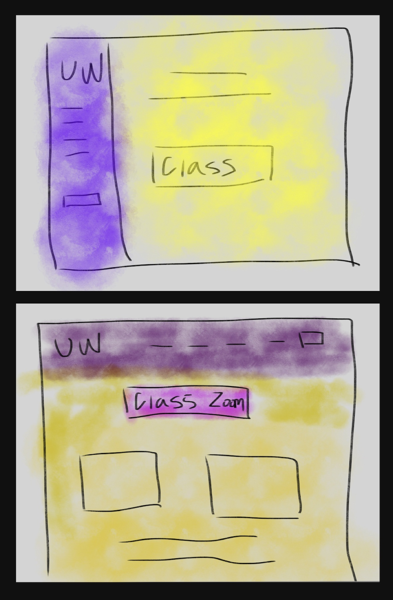

Case study · UX design · Web design
University of Washington
A choir platform that kept classes and concerts going during COVID-19, safely and online.
Section 1
One of the department's most successful programs
The platform kept the choir teaching and performing through COVID-19, and the program became one of the most successful in UW's music department, measured by the share of returning students.

Section 2
Keeping a choir singing
During the pandemic, UW's arts departments needed ways to teach within health restrictions. The choir needed a home for its weekly sessions.
- Share audio files and instructions with students
- Let students upload their MP3 and MP4 recordings
- Broadcast the end-of-quarter concerts

Section 3
As seamless as possible
The professor's priority: students reach their audio files and hop into their Zoom class without friction.
- Easy access to class. A large button on the landing page takes students straight to class.
- Class organisation. Menus that behave like tabs, so moving around feels seamless.
- File uploads. A way to upload large audio and video files, the part that needed the most change.
Section 4
Define, ideate, build, test
- Define. Three core goals: share audio and instructions, easy student uploads, and live end-of-quarter concerts, all fully virtual.
- Ideate. Agile brainstorming with analysts, developers and designers on flows and approaches, including AI to organise large volumes of files.
- Implement. Iterative design, code and feedback. Uploads, naming and sorting were reworked, and AI categorised files to keep each class organised.
- Test. Technical testing plus user testing with real students, which led to a better upload process and overall usability.

Section 5
An early mock sketch
The first layout put the class button front and centre, with tabs for everything else.
Section 6
The class portal
We iterated on the site in a cross-functional team, checking back with real users for feedback at every step.
Section 7
Concerts, without the hall
- After the quarter, submitted videos and audio go to an editing team to become production-ready concert clips.
- Simulated broadcasts reach far more people and don't depend on location.
- They bring a production that would happen in person into a virtual space.